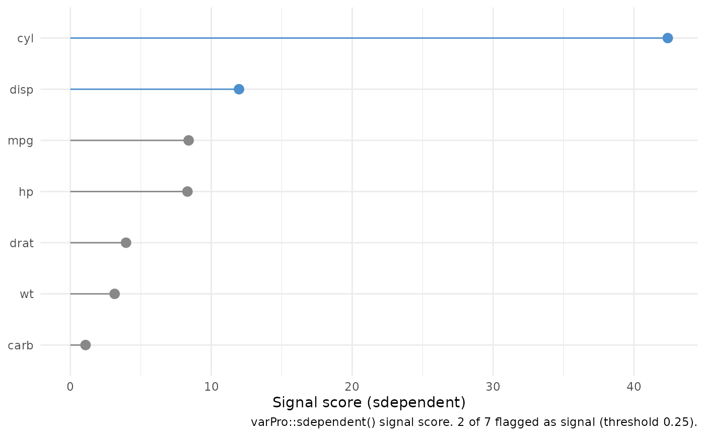

Signal-variable detection from an unsupervised varPro fit
Source:R/gg_sdependent.R
gg_sdependent.RdTidy wrapper around varPro::sdependent() for a uvarpro object. Where
gg_udependent() draws the cross-variable dependency graph,
gg_sdependent() surfaces sdependent()'s signal-variable detection: a
ranked table of the per-variable signal score and graph degree, with the
variables flagged as "signal" (those whose dependency structure clears the
detection threshold).
Usage
gg_sdependent(
object,
...,
threshold = 0.25,
q.signal = 0.75,
directed = TRUE,
min.degree = NULL,
beta_fit = NULL
)Arguments
- object
A
uvarproobject fromvarPro::uvarpro().- ...
Forwarded to
varPro::get.beta.entropy()whenbeta_fit = NULL; ignored, with a warning, whenbeta_fitis supplied.- threshold, q.signal, directed, min.degree
Passed to
varPro::sdependent()(defaults matchgg_udependent()).- beta_fit
Optional precomputed
varPro::get.beta.entropy()matrix.
Value
A gg_sdependent object (a data.frame), one row per candidate
variable, most-signal first, with columns:
variablefactor; levels reversed so the top variable lands at the top after
coord_flip().imp_scoresdependent()per-variable signal score.degreenode degree in the dependency graph.
signallogical; variable is in
sdependent()$signal.vars.
The provenance attribute records source, family ("unsupv"),
threshold, q.signal, directed, n_signal, and n_var.
Details
sdependent() runs on the varPro::get.beta.entropy() lasso-coefficient
matrix and returns, with plot = FALSE, a list of imp.score (per-variable
signal score), degree (node degree in the dependency graph), and
signal.vars (the detected signal set). This wrapper tidies that into one
row per candidate variable, ranked by imp.score. Because the entropy
matrix is the expensive part, beta_fit accepts a precomputed
varPro::get.beta.entropy() matrix (shared with gg_beta_uvarpro() and
gg_udependent()).
See also
gg_udependent() (the dependency graph), gg_beta_uvarpro()
(lasso importance), varPro::sdependent(), varPro::uvarpro().
Examples
# \donttest{
if (requireNamespace("varPro", quietly = TRUE)) {
set.seed(1)
o <- varPro::uvarpro(mtcars, ntree = 50)
gg <- gg_sdependent(o)
plot(gg)
}

# }